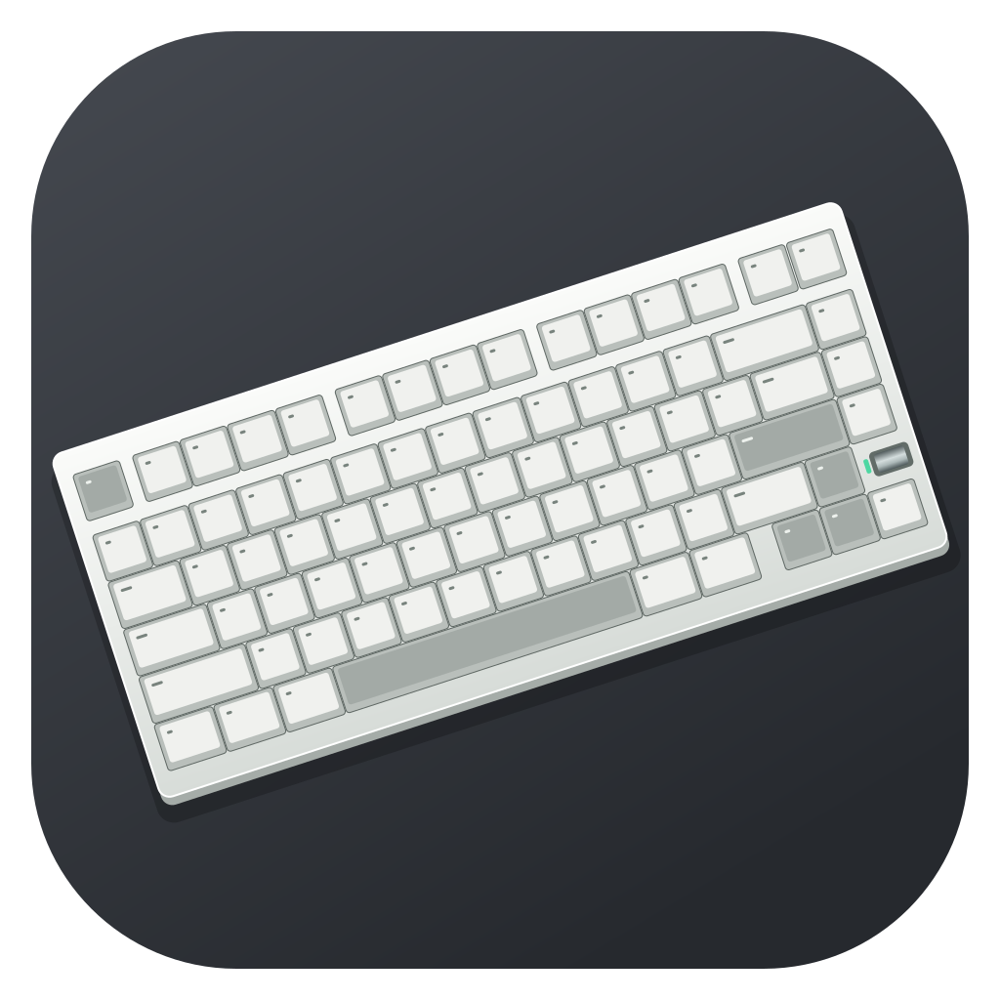

Skip to content

WEIKAV App
Back to overview
↗
Explore the app.
Screenshots of the current release, with NUT75 as the first supported model.
All screens
Keys
Lighting
Macros
Advanced
Device & settings
×
←
→